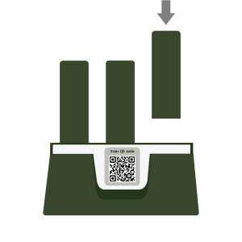

<!--
  Generated template for the ReturnPage page.

  See http://ionicframework.com/docs/components/#navigation for more info on
  Ionic pages and navigation.
-->
<ion-content>
  <div class="toolbar-box">
      <div class="toolbar-top">
        <!-- <ion-icon name="md-menu" class="color-05 ft-30"></ion-icon> -->
        <h3 class="color-05">PowerBus</h3>
        <ion-icon name="ios-headset-outline" class="color-05 ft-30"></ion-icon>     
      </div>

      <!-- alertbar 提示栏      start！！！
          1、alertbar news （未租借  为默认状态 显示提示信息）

          2、alertbar （租借状态  显示租借信息）
      -->
      <button ion-button round class="alertbar news color-05 ft-12 bg-02 full-w ">There aer about 37 stations roumd you.</button>
      <button ion-button round class="color-05 bg-02 full-w m-n h-35">
        <div class="alertbar ft-14 full-h full-w">
          <div>In Progress:</div>
          <div><ion-icon name="ios-stopwatch-outline" class="color-05"></ion-icon>&ensp;01h22m</div>
          <div><ion-icon name="ios-folder-open-outline" class="color-05"></ion-icon>&ensp;$2</div>
        </div>
      </button>
      <!--  alertbar   end！！   -->
  </div>

  
  <!--  归还时  弹出归还动画  start！ -->
  <div class="alertbox bg-02" *ngIf="returnHide" (click)="returnShow()">
    <div class="ad-area">
      
      <P class="ft-12 color-19">RETURN to 3rd SPOT</P>
    </div>
  </div>
  <!--   归还时  弹出归还动画  end！ -->


  <!--  底部功能条  -->
  <div class="toolar-bottom">
    <button ion-button class="btn-sm bg-02 p-n m-n"><ion-icon name="ios-pin-outline" class="color-05 ft-16"></ion-icon></button>
    <button icon-button round class="ft-12 bg-01 color-06 h-35 br-25 w-70per" (click)="returnShow()">RETURN</button>
    
    <!--  右侧功能按钮  -->
    <div class="btn-box">
        <ion-fab right bottom class="btn-main">
            <button ion-fab class="ft-16 color-01 bg-02 btn-sm"><ion-icon name="add" class="ft-14"></ion-icon></button>
            <ion-fab-list side="top" style="display:flex;min-width:25px;">
              <button ion-fab class="btn-sm" (click)="gostorelist()"><ion-icon name="ios-home-outline" class="ft-16"></ion-icon></button>
              <button ion-fab class="btn-sm" (click)="goorderhistory()"><ion-icon name="list"class="ft-16"></ion-icon></button>
              <button ion-fab class="btn-sm" (click)="gowallet()"><ion-icon name="ios-folder-open-outline" class="ft-16"></ion-icon></button>
              <button ion-fab class="btn-sm" (click)="logout()"><ion-icon name="ios-power" class="ft-16"></ion-icon></button>
            </ion-fab-list>
        </ion-fab>
    </div>
  </div>
  <div id="mapb"></div>
</ion-content>
